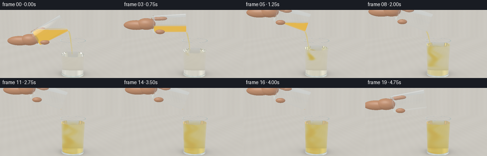
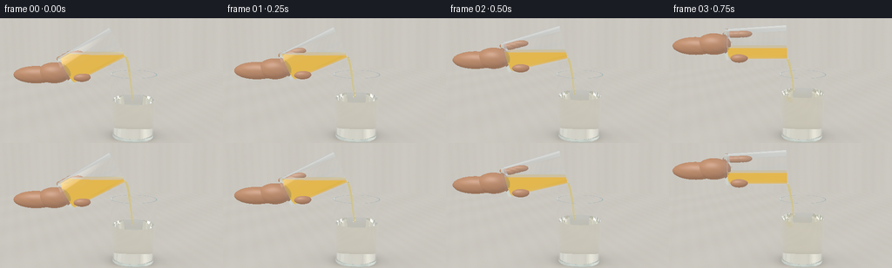
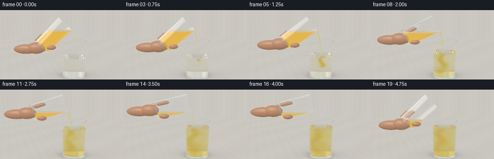
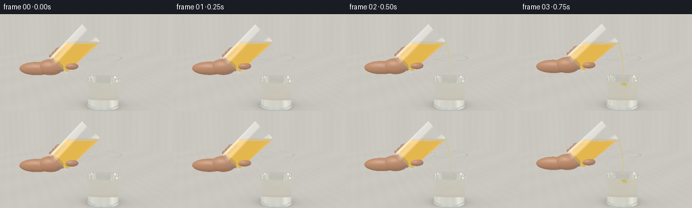

CODING AGENTS AS PIXEL WORLD MODELS
traex/GPT-6.1-Sol · phygen_139
点击播放 · 原生 RGB 像素
逐轮保存的候选
回放视频、检查图与代码变化。
每份候选均可单独播放。实际图片检查记录在下方工具轨迹中。
候选 01播放与检查图
点击播放 · 原生 RGB 像素


展开代码变化
--- 上一保存版本
+++ 本次保存版本
@@ -0,0 +1,362 @@
+"""Deterministic RGB animation using local analytic ray geometry and optics."""
+from pathlib import Path
+import json, math, time
+import numpy as np
+from PIL import Image
+import artifact_io
+
+ROOT = Path(__file__).resolve().parent
+SPEC = json.loads((ROOT/'task_spec.json').read_text())
+W,H,N = SPEC['width'], SPEC['height'], SPEC['frames']
+S=2
+RW,RH=W*S,H*S
+DT=np.float32
+EPS=0.00012
+
+def norm(x):
+ return x / np.maximum(np.linalg.norm(x,axis=-1,keepdims=True),1e-10)
+def dot(x,y): return np.sum(x*y,axis=-1)
+def smooth(x):
+ x=np.clip(x,0,1); return x*x*(3-2*x)
+
+CAM=np.array([0,3.20,8.0],DT)
+LOOK=np.array([0,1.53,0],DT)
+FW=norm(LOOK-CAM); RIGHT=norm(np.cross(FW,[0,1,0])); UP=np.cross(RIGHT,FW)
+xx,yy=np.meshgrid((np.arange(RW)+.5)/RW*2-1,1-(np.arange(RH)+.5)/RH*2)
+fov=math.tan(math.radians(22.7)/2)
+RAYS=norm(FW+xx[...,None]*(W/H)*fov*RIGHT+yy[...,None]*fov*UP).reshape(-1,3).astype(DT)
+
+# A softly lit stone counter and large off-camera studio windows.
+def environment(d):
+ base=np.zeros_like(d)+np.array([.60,.65,.68],DT)
+ high=np.clip(d[:,1],0,1)
+ base+=high[:,None]*np.array([.14,.13,.10],DT)
+ # Luminous elongated softboxes are responsible for the clear glass highlights.
+ left=np.exp(-((d[:,0]+.72)/.15)**8-((d[:,1]-.28)/.66)**8)
+ right=np.exp(-((d[:,0]-.79)/.075)**6-((d[:,1]-.25)/.55)**8)
+ rear=np.exp(-((d[:,0]+.23)/.27)**8-((d[:,1]-.66)/.18)**8)*np.clip(-d[:,2]*2,0,1)
+ base+=left[:,None]*np.array([2.5,2.42,2.25])+right[:,None]*np.array([1.7,1.85,2.05])+rear[:,None]*.85
+ return base
+
+def backdrop(d):
+ # Defocused warm-gray studio background, with quiet broad vertical gradients.
+ t=np.clip(.55+d[:,1]*1.2,0,1)
+ val=np.array([.59,.64,.65])[None,:]*(1-t[:,None])+np.array([.80,.79,.75])[None,:]*t[:,None]
+ shade=.033*np.sin(d[:,0]*8)+.021*np.cos(d[:,0]*19)
+ return val+shade[:,None]
+
+class Cup:
+ def __init__(self,base,axis,height,r0,r1,thick=.026,bottom=.072):
+ self.base=np.array(base,DT); self.axis=np.array(axis,DT)
+ self.H=height; self.r0=r0; self.k=(r1-r0)/height; self.th=thick; self.bottom=bottom
+ self.U=np.array([axis[1],-axis[0],0],DT)
+ self.V=np.array([0,0,1],DT)
+ def local(self,o,d):
+ q=o-self.base
+ return np.stack([dot(q,self.U),dot(q,self.axis),dot(q,self.V)],1), np.stack([dot(d,self.U),dot(d,self.axis),dot(d,self.V)],1)
+ def worldnormal(self,n):
+ return norm(n[:,0,None]*self.U+n[:,1,None]*self.axis+n[:,2,None]*self.V)
+ def intersect(self,o,d, liquid=False, level=0, ripple_t=0):
+ p,v=self.local(o,d); m=len(o)
+ best=np.full(m,1e7,DT); normal=np.zeros_like(o)
+ rbase=self.r0-self.th-.003 if liquid else self.r0
+ hbottom=self.bottom+.003 if liquid else 0
+ htop=self.H-.003 if liquid else self.H
+ def update(tt,n,valid):
+ nonlocal best,normal
+ mask=valid&(tt>EPS)&(tt<best)
+ best=np.where(mask,tt,best); normal=np.where(mask[:,None],n,normal)
+ # Frusta: outer and inner glass walls, or the water contacting the interior.
+ for rb,sign in ([(rbase,1)] if liquid else [(self.r0,1),(self.r0-self.th,-1)]):
+ r=rb+self.k*p[:,1]
+ a=v[:,0]**2+v[:,2]**2-(self.k*v[:,1])**2
+ b=2*(p[:,0]*v[:,0]+p[:,2]*v[:,2]-r*self.k*v[:,1])
+ c=p[:,0]**2+p[:,2]**2-r*r
+ dis=b*b-4*a*c
+ root=np.sqrt(np.maximum(dis,0))
+ for tt in ((-b-root)/(2*a+1e-20),(-b+root)/(2*a+1e-20)):
+ q=p+tt[:,None]*v
+ lo=hbottom if liquid else (0 if sign==1 else self.bottom)
+ valid=(dis>=0)&(q[:,1]>=lo)&(q[:,1]<=htop)
+ if liquid:
+ wy=self.base[1]+q[:,0]*self.U[1]+q[:,1]*self.axis[1]
+ valid &= wy<=level+1e-5
+ n=np.stack([q[:,0],-self.k*(rb+self.k*q[:,1]),q[:,2]],1)*sign
+ update(tt,self.worldnormal(n),valid)
+ # Glass bottom, interior floor, and annular rounded-looking lip.
+ planes=[(hbottom,-1,False)] if liquid else [(0,-1,False),(self.bottom,1,True),(self.H,1,None)]
+ for h,sg,inner in planes:
+ tt=(h-p[:,1])/(v[:,1]+1e-20)
+ q=p+tt[:,None]*v; rad=q[:,0]**2+q[:,2]**2
+ ro=self.r0+self.k*h; ri=ro-self.th
+ if liquid: valid=rad<=(ro-self.th-.003)**2
+ elif inner is True: valid=rad<=ri*ri
+ elif inner is None: valid=(rad<=ro*ro)&(rad>=ri*ri)
+ else: valid=rad<=ro*ro
+ if liquid:
+ wy=self.base[1]+q[:,0]*self.U[1]+h*self.axis[1]
+ valid &= wy<=level
+ update(tt,np.broadcast_to(self.axis*sg,o.shape),valid)
+ if liquid:
+ # Gravity keeps the liquid surface horizontal even inside the tilted tumbler.
+ tt=(level-o[:,1])/(d[:,1]+1e-20)
+ q=p+tt[:,None]*v; ri=self.r0-self.th-.003+self.k*q[:,1]
+ valid=(q[:,1]>=hbottom)&(q[:,1]<=htop)&(q[:,0]**2+q[:,2]**2<=ri*ri)
+ n=np.tile([0.,1.,0.],(m,1)).astype(DT)
+ if np.allclose(self.axis,[0,1,0]):
+ world=o+tt[:,None]*d
+ dx=world[:,0]-.27; dz=world[:,2]-.025
+ rr=np.sqrt(dx*dx+dz*dz)+.001
+ envelope=np.exp(-rr*3.2)*smooth((ripple_t-.35)*3)*(1-.7*smooth((ripple_t-4.2)*2))
+ slope=.035*np.cos(rr*43-ripple_t*15)*envelope
+ n[:,0]=-slope*dx/rr; n[:,2]=-slope*dz/rr
+ n=norm(n)
+ update(tt,n,valid)
+ return best,normal
+
+class Ellipsoid:
+ def __init__(self,center,radii,mat=4):
+ self.c=np.array(center,DT); self.r=np.array(radii,DT); self.mat=mat
+ def intersect(self,o,d):
+ p=(o-self.c)/self.r; v=d/self.r
+ b=dot(p,v); a=dot(v,v); c=dot(p,p)-1
+ disc=b*b-a*c; root=np.sqrt(np.maximum(0,disc))
+ t1=(-b-root)/a; t2=(-b+root)/a
+ tt=np.where(t1>EPS,t1,t2)
+ valid=(disc>=0)&(tt>EPS)
+ q=(o+tt[:,None]*d-self.c)/self.r**2
+ return np.where(valid,tt,1e7),norm(q)
+
+class Stream:
+ def __init__(self,points,radii):
+ self.points=np.array(points,DT);self.radii=np.array(radii,DT)
+ self.lo=self.points.min(0)-.07; self.hi=self.points.max(0)+.07
+ def intersect(self,o,d):
+ m=len(o); best=np.full(m,1e7,DT); ns=np.zeros_like(o)
+ ta=(self.lo-o)/(d+1e-20); tb=(self.hi-o)/(d+1e-20)
+ near=np.minimum(ta,tb).max(1); far=np.maximum(ta,tb).min(1)
+ inds=np.flatnonzero((far>=np.maximum(near,EPS)))
+ if len(inds)==0:return best,ns
+ oo=o[inds];dd=d[inds];bt=np.full(len(inds),1e7,DT);nn=np.zeros_like(oo)
+ # Piecewise smooth frusta, with only external union boundaries accepted.
+ for k in range(len(self.points)-1):
+ a=self.points[k];b=self.points[k+1];vec=b-a; length=np.linalg.norm(vec); ax=vec/length
+ p=oo-a; ph=dot(p,ax);dh=dot(dd,ax);pr=p-ph[:,None]*ax;dr=dd-dh[:,None]*ax
+ r=self.radii[k]; slope=(self.radii[k+1]-r)/length
+ rr=r+slope*ph
+ aa=dot(dr,dr)-(slope*dh)**2;bb=2*(dot(pr,dr)-rr*slope*dh);cc=dot(pr,pr)-rr**2
+ discr=bb*bb-4*aa*cc; root=np.sqrt(np.maximum(discr,0))
+ for tt in ((-bb-root)/(2*aa+1e-20),(-bb+root)/(2*aa+1e-20)):
+ h=ph+tt*dh; q=pr+tt[:,None]*dr
+ valid=(discr>=0)&(h>=0)&(h<=length)&(tt>EPS)&(tt<bt)
+ n=norm(q-slope*(r+slope*h)[:,None]*ax)
+ bt=np.where(valid,tt,bt);nn=np.where(valid[:,None],n,nn)
+ best[inds]=bt;ns[inds]=nn
+ return best,ns
+
+# Quasi-uniform deterministic samples give volume-conserving fluid levels.
+rng=np.random.default_rng(345)
+hs=rng.random(75000)*1.48
+rad=(.385+.03*hs/1.48)*np.sqrt(rng.random(len(hs)))
+phi=rng.random(len(hs))*2*np.pi
+SAMPLE_U=rad*np.cos(phi);SAMPLE_H=hs+.075
+
+def source_configuration(t):
+ tilt=math.radians(61+49*smooth(t/1.4)-29*smooth((t-3.9)/.7))
+ axis=np.array([math.sin(tilt),math.cos(tilt),0],DT)
+ U=np.array([axis[1],-axis[0],0],DT)
+ rim=np.array([.16-.2*smooth((t-4.0)/.6),2.52+.10*smooth((t-4.0)/.6),-.08],DT)
+ base=rim-axis*1.55
+ cup=Cup(base,axis,1.55,.405,.45,.025,.075)
+ lowlip=rim+U*.43
+ # Maximum retained volume with an open low lip; draining lags tilt slightly.
+ ys=base[1]+SAMPLE_U*U[1]+SAMPLE_H*axis[1]
+ capacity=float(np.mean(ys<=lowlip[1]-.01))
+ return cup,ys,capacity,lowlip
+
+configs=[]; fraction=.70; prev=.70
+for f in range(N):
+ t=f/SPEC['fps']; cup,ys,capacity,lip=source_configuration(t)
+ if capacity<fraction:
+ fraction=max(capacity,fraction-.080)
+ level=float(np.quantile(ys,fraction))
+ out=max(0,prev-fraction);prev=fraction
+ configs.append((cup,level,fraction,lip,out))
+
+# Accumulated transport in the receiving water, with a sinking, curling orange plume.
+def volume_transport(points,t,mat):
+ m=len(points)
+ if mat==1:
+ return np.tile([.13,.035,.055],(m,1)),np.zeros((m,3),DT)
+ if mat==3 or mat==5:
+ return np.tile([2.7,4.8,11.5],(m,1)),np.tile([.99,.55,.035],(m,1))
+ x,y,z=points.T
+ age=max(0,t-.40)
+ blend=smooth((t-.4)/4.1)
+ # The visible leading edge advances continuously rather than instantly filling the glass.
+ top=water_level(t)
+ depth=top-y
+ front=.03+age*.72
+ mask=smooth((front-depth)/.18)
+ width=.042+.06*np.maximum(depth,0)+.016*age
+ center=.27+.12*np.sin(depth*7-age*2.1)*np.clip(depth*2,0,1)+.07*depth
+ zz=.025+.10*np.sin(depth*6+age*1.9)*np.clip(depth,0,1)
+ plume=np.exp(-((x-center)/width)**2-((z-zz)/(width*1.15))**2)*mask
+ plume+=.30*np.exp(-((x-(.47+.15*np.sin(age*1.8+depth*9)))/(.09+depth*.10))**2-((z+.06)/.16)**2)*mask*smooth(age-1)
+ bottom=np.exp(-((y-.15)/(.10+.06*age))**2)*smooth(age-1)*.09
+ c=.010+.155*blend+.49*plume*(1-.40*blend)+bottom
+ sigma=np.stack([.04+1.05*c,.025+2.6*c,.018+8*c],1)
+ scatter=np.tile([.98,.64,.09],(m,1))*.65
+ return sigma,scatter
+
+def water_level(t):
+ idx=min(N-1,max(0,int(round(t*SPEC['fps']))))
+ return .96+(.70-configs[idx][2])*.79
+
+def floor_color(p):
+ x,z=p[:,0],p[:,2]
+ broad=.009*np.sin(x*2.2+z*1.8)+.006*np.sin(x*13-z*4)
+ fine=.003*np.sin(x*112+z*72)*np.sin(z*87-x*19)
+ grain=.002*np.sin(x*530+np.sin(z*450)*3)
+ base=np.tile([.71,.685,.63],(len(p),1))+(broad+fine+grain)[:,None]
+ sh=.24*np.exp(-((x-.57)/.65)**2-(z/.47)**2)
+ sh+=.09*np.exp(-((x-.70)/1.08)**2-((z+.10)/.69)**2)
+ sh+=.29*np.exp(-((x-.56)/.54)**4-(z/.4)**4)
+ # Glass sends a soft band of golden light onto the surface beside its base.
+ ca=.08*np.exp(-((x-.5)/.51)**2-((z-.34)/.19)**2)
+ return base*(1-sh[:,None])+ca[:,None]*np.array([1,.79,.34])
+
+def make_hand(cup):
+ # The hand enters from beyond the left edge; rounded fingers support the far end.
+ b=cup.base
+ objs=[]
+ palm=b-cup.axis*.09+np.array([-.20,.03,.17])
+ objs.append(Ellipsoid(palm,[.43,.27,.25]))
+ objs.append(Ellipsoid(palm+[-.47,-.05,-.015],[.58,.225,.20]))
+ # Curled lower fingers lie behind the glass, with a thumb on the near side.
+ for k in range(3):
+ c=b+cup.axis*(.16+k*.15)-cup.U*.28+np.array([-.045,-.03,-.24])
+ objs.append(Ellipsoid(c,[.24,.098,.11]))
+ thumb=b+cup.axis*.37+cup.U*.31+np.array([-.03,-.02,.27])
+ objs.append(Ellipsoid(thumb,[.22,.115,.12]))
+ return objs
+
+def render(f):
+ t=f/SPEC['fps']; source,sl,frac,lip,out=configs[f]
+ receiver=Cup([.58,.025,0],[0,1,0],1.68,.555,.606,.030,.08)
+ wl=water_level(t)
+ pouring=out>.001 and t<4.05
+ stream=None
+ if pouring:
+ pts=[];rs=[]
+ # Ballistic departure from the low rim, narrowing as gravity accelerates the pour.
+ drop=max(.1,lip[1]-wl)
+ for j in range(13):
+ u=j/12; yy=lip[1]-drop*u
+ x=lip[0]+.20*math.sqrt(u+.015)-.023+.008*math.sin(u*10-t*6)*u
+ z=lip[2]+.10*u+.007*math.sin(u*14-t*4)*u
+ pts.append([x,yy,z]);rs.append((.037-.011*u)*min(1,(out/.045)**.4))
+ stream=Stream(pts,rs)
+ hand=make_hand(source)
+ count=len(RAYS)
+ origins=np.broadcast_to(CAM,(count,3)).copy(); dirs=RAYS.copy()
+ weight=np.ones((count,3),DT);color=np.zeros((count,3),DT); medium=np.zeros(count,np.int8)
+ active=np.arange(count)
+ for bounce in range(11):
+ if len(active)==0:break
+ o=origins[active];d=dirs[active]; m=len(active)
+ best=np.full(m,1e6,DT); nn=np.zeros_like(o); material=np.zeros(m,np.int8)
+ # Background is a real, flat tabletop plus a seamless defocused studio wall.
+ tf=-o[:,1]/(d[:,1]+1e-20); valid=(tf>EPS)
+ best=np.where(valid,tf,best);nn[valid]=[0,1,0];material[valid]=6
+ def consider(tt,n,mat):
+ nonlocal best,nn,material
+ q=(tt<best)&(tt>EPS)
+ best=np.where(q,tt,best);nn=np.where(q[:,None],n,nn);material=np.where(q,mat,material)
+ for c,lev,mat in [(receiver,0,1),(source,0,1),(receiver,wl,2),(source,sl,3)]:
+ tt,n=c.intersect(o,d,liquid=mat!=1,level=lev,ripple_t=t)
+ consider(tt,n,mat)
+ if stream is not None:
+ tt,n=stream.intersect(o,d); consider(tt,n,5)
+ for h in hand:
+ tt,n=h.intersect(o,d);consider(tt,n,4)
+ hit=o+d*np.minimum(best,20)[:,None]
+ # Beer-Lambert attenuation and in-scattered warm juice color, through path length.
+ for med in [1,2,3,5]:
+ ids=np.flatnonzero(medium[active]==med)
+ if len(ids):
+ length=np.minimum(best[ids],5)
+ mid=o[ids]+d[ids]*length[:,None]*.5
+ sig,sca=volume_transport(mid,t,med)
+ trans=np.exp(-sig*length[:,None])
+ ix=active[ids]
+ color[ix]+=weight[ix]*(1-trans)*sca
+ weight[ix]*=trans
+ miss=material==0
+ if np.any(miss):
+ ix=active[miss];color[ix]+=weight[ix]*backdrop(d[miss]);weight[ix]=0
+ floor=material==6
+ if np.any(floor):
+ ix=active[floor]; color[ix]+=weight[ix]*floor_color(hit[floor]);weight[ix]=0
+ skin=material==4
+ if np.any(skin):
+ ix=active[skin]; p=hit[skin];n=nn[skin]
+ light=norm(np.array([-3,6,4],DT)-p)
+ nd=np.maximum(0,dot(n,light))
+ diff=.55+.42*nd
+ skincol=np.tile([.69,.37,.22],(len(p),1))
+ skincol+=np.sin(p[:,0,None]*21+p[:,1,None]*38)*np.array([.009,.004,.001])
+ halfv=norm(light-d[skin]);spec=np.maximum(0,dot(n,halfv))**27*.14
+ # Subtle cooler fill prevents flat orange-colored skin.
+ fill=np.maximum(0,n[:,0])*.045
+ col=skincol*diff[:,None]+spec[:,None]+fill[:,None]*np.array([.65,.75,1.])
+ color[ix]+=weight[ix]*col;weight[ix]=0
+ die=(material>=1)&(material<=5)&(material!=4)
+ local=np.flatnonzero(die)
+ if len(local)==0:break
+ ix=active[local]; ni=nn[local]; di=d[local];mt=material[local]
+ entering=dot(di,ni)<0
+ n=ni*np.where(entering,1,-1)[:,None]
+ iors=np.array([1,1.515,1.333,1.345,1,1.345],DT)
+ before=iors[medium[ix]]; after=np.where(entering,iors[mt],1)
+ eta=before/after; ci=-dot(di,n)
+ k=1-eta**2*(1-ci**2)
+ reflection=norm(di+2*ci[:,None]*n)
+ r0=((before-after)/(before+after))**2
+ fresnel=r0+(1-r0)*np.maximum(0,1-ci)**5
+ tir=k<0;fresnel=np.where(tir,1,fresnel)
+ # One deterministic reflected-light sample and exact transmitted main path.
+ reflected=environment(reflection)
+ # Counter reflections are visible in glass lower down.
+ down=reflection[:,1]<-.05
+ if np.any(down):
+ td=-hit[local][down,1]/reflection[down,1]
+ pp=hit[local][down]+reflection[down]*td[:,None]
+ reflected[down]=floor_color(pp)
+ color[ix]+=weight[ix]*fresnel[:,None]*reflected*(~tir)[:,None]
+ weight[ix]*=np.where(tir,1,1-fresnel)[:,None]
+ transmitted=norm(eta[:,None]*di+(eta*ci-np.sqrt(np.maximum(k,0)))[:,None]*n)
+ newd=np.where(tir[:,None],reflection,transmitted)
+ dirs[ix]=newd
+ origins[ix]=hit[local]+newd*.00035
+ newmed=np.where(entering,mt,0)
+ medium[ix]=np.where(tir,medium[ix],newmed)
+ active=ix[np.max(weight[ix],axis=1)>.002]
+ if len(active):color[active]+=weight[active]*environment(dirs[active])*.82
+ # Soft camera response, no hard outlines; output is standard RGB.
+ color=np.maximum(color,0)
+ color=color/(1+color*.18)
+ color=np.clip(color,0,1)**(1/2.0)
+ im=np.uint8(np.clip(color.reshape(RH,RW,3)*255+.5,0,255))
+ return np.asarray(Image.fromarray(im).resize((W,H),Image.Resampling.LANCZOS))
+
+def main():
+ begin=time.time();frames=[]
+ for f in range(N):
+ frames.append(render(f))
+ print(f'frame {f+1}/{N} {time.time()-begin:.1f}s',flush=True)
+ frames=np.stack(frames).astype(np.uint8)
+ artifact_io.save(frames,ROOT)
+ print('Saved RGB video artifacts',frames.shape,flush=True)
+
+if __name__=='__main__':main()
候选 02播放与检查图
点击播放 · 原生 RGB 像素


展开代码变化
--- 上一保存版本
+++ 本次保存版本
@@ -156,13 +156,13 @@
# Quasi-uniform deterministic samples give volume-conserving fluid levels.
rng=np.random.default_rng(345)
-hs=rng.random(75000)*1.48
-rad=(.385+.03*hs/1.48)*np.sqrt(rng.random(len(hs)))
+hs=rng.random(75000)*1.47
+rad=(.38+.045*(hs+.075)/1.55)*np.sqrt(rng.random(len(hs)))
phi=rng.random(len(hs))*2*np.pi
SAMPLE_U=rad*np.cos(phi);SAMPLE_H=hs+.075
def source_configuration(t):
- tilt=math.radians(61+49*smooth(t/1.4)-29*smooth((t-3.9)/.7))
+ tilt=math.radians(45+33*smooth(t/3.65)-30*smooth((t-3.9)/.75))
axis=np.array([math.sin(tilt),math.cos(tilt),0],DT)
U=np.array([axis[1],-axis[0],0],DT)
rim=np.array([.16-.2*smooth((t-4.0)/.6),2.52+.10*smooth((t-4.0)/.6),-.08],DT)
@@ -178,7 +178,7 @@
for f in range(N):
t=f/SPEC['fps']; cup,ys,capacity,lip=source_configuration(t)
if capacity<fraction:
- fraction=max(capacity,fraction-.080)
+ fraction=capacity
level=float(np.quantile(ys,fraction))
out=max(0,prev-fraction);prev=fraction
configs.append((cup,level,fraction,lip,out))
@@ -199,7 +199,9 @@
front=.03+age*.72
mask=smooth((front-depth)/.18)
width=.042+.06*np.maximum(depth,0)+.016*age
- center=.27+.12*np.sin(depth*7-age*2.1)*np.clip(depth*2,0,1)+.07*depth
+ idx=min(N-1,max(0,int(round(t*SPEC['fps']))))
+ impact_x=configs[idx][3][0]+.178
+ center=impact_x+.12*np.sin(depth*7-age*2.1)*np.clip(depth*2,0,1)-.09*depth
zz=.025+.10*np.sin(depth*6+age*1.9)*np.clip(depth,0,1)
plume=np.exp(-((x-center)/width)**2-((z-zz)/(width*1.15))**2)*mask
plume+=.30*np.exp(-((x-(.47+.15*np.sin(age*1.8+depth*9)))/(.09+depth*.10))**2-((z+.06)/.16)**2)*mask*smooth(age-1)
可观测工具轨迹
实际执行的命令与返回图片。
命令 1exit 0
/bin/bash -lc 'ls -la; cat prompt.txt; cat GENERATION_RULES.md; cat task_spec.json'
命令 2exit 0
/bin/bash -lc "cat artifact_io.py; cat player_template.html; python - <<'PY'
import numpy,PIL
print('numpy',numpy.__version__)
PY"命令 3exit 0
/bin/bash -lc "which ffmpeg || true; python - <<'PY' import importlib.util for x in ['scipy','imageio']: print(x, bool(importlib.util.find_spec(x))) PY"
命令 4exit 0
/bin/bash -lc "cat > generate.py <<'PY'
\"\"\"Deterministic RGB animation using local analytic ray geometry and optics.\"\"\"
from pathlib import Path
import json, math, time
import numpy as np
from PIL import Image
import artifact_io
ROOT = Path(__file__).resolve().parent
SPEC = json.loads((ROOT/'task_spec.json').read_text())
W,H,N = SPEC['width'], SPEC['height'], SPEC['frames']
S=2
RW,RH=W*S,H*S
DT=np.float32
EPS=0.00012
def norm(x):
return x / np.maximum(np.linalg.norm(x,axis=-1,keepdims=True),1e-10)
def dot(x,y): return np.sum(x*y,axis=-1)
def smooth(x):
x=np.clip(x,0,1); return x*x*(3-2*x)
CAM=np.array([0,3.20,8.0],DT)
LOOK=np.array([0,1.53,0],DT)
FW=norm(LOOK-CAM); RIGHT=norm(np.cross(FW,[0,1,0])); UP=np.cross(RIGHT,FW)
xx,yy=np.meshgrid((np.arange(RW)+.5)/RW*2-1,1-(np.arange(RH)+.5)/RH*2)
fov=math.tan(math.radians(22.7)/2)
RAYS=norm(FW+xx[...,None]*(W/H)*fov*RIGHT+yy[...,None]*fov*UP).reshape(-1,3).astype(DT)
# A softly lit stone counter and large off-camera studio windows.
def environment(d):
base=np.zeros_like(d)+np.array([.60,.65,.68],DT)
high=np.clip(d[:,1],0,1)
base+=high[:,None]*np.array([.14,.13,.10],DT)
# Luminous elongated softboxes are responsible for the clear glass highlights.
left=np.exp(-((d[:,0]+.72)/.15)**8-((d[:,1]-.28)/.66)**8)
right=np.exp(-((d[:,0]-.79)/.075)**6-((d[:,1]-.25)/.55)**8)
rear=np.exp(-((d[:,0]+.23)/.27)**8-((d[:,1]-.66)/.18)**8)*np.clip(-d[:,2]*2,0,1)
base+=left[:,None]*np.array([2.5,2.42,2.25])+right[:,None]*np.array([1.7,1.85,2.05])+rear[:,None]*.85
return base
def backdrop(d):
# Defocused warm-gray studio background, with quiet broad vertical gradients.
t=np.clip(.55+d[:,1]*1.2,0,1)
val=np.array([.59,.64,.65])[None,:]*(1-t[:,None])+np.array([.80,.79,.75])[None,:]*t[:,None]
shade=.033*np.sin(d[:,0]*8)+.021*np.cos(d[:,0]*19)
return val+shade[:,None]
class Cup:
def __init__(self,base,axis,height,r0,r1,thick=.026,bottom=.072):
self.base=np.array(base,DT); self.axis=np.array(axis,DT)
self.H=height; self.r0=r0; self.k=(r1-r0)/height; self.th=thick; self.bottom=bottom
self.U=np.array([axis[1],-axis[0],0],DT)
self.V=np.array([0,0,1],DT)
def local(self,o,d):
q=o-self.base
return np.stack([dot(q,self.U),dot(q,self.axis),dot(q,self.V)],1), np.stack([dot(d,self.U),dot(d,self.axis),dot(d,self.V)],1)
def worldnormal(self,n):
return norm(n[:,0,None]*self.U+n[:,1,None]*self.axis+n[:,2,None]*self.V)
def intersect(self,o,d, liquid=False, level=0, ripple_t=0):
p,v=self.local(o,d); m=len(o)
best=np.full(m,1e7,DT); normal=np.zeros_like(o)
rbase=self.r0-self.th-.003 if liquid else self.r0
hbottom=self.bottom+.003 if liquid else 0
htop=self.H-.003 if liquid else self.H
def update(tt,n,valid):
nonlocal best,normal
mask=valid&(tt>EPS)&(tt<best)
best=np.where(mask,tt,best); normal=np.where(mask[:,None],n,normal)
# Frusta: outer and inner glass walls, or the water contacting the interior.
for rb,sign in ([(rbase,1)] if liquid else [(self.r0,1),(self.r0-self.th,-1)]):
r=rb+self.k*p[:,1]
a=v[:,0]**2+v[:,2]**2-(self.k*v[:,1])**2
b=2*(p[:,0]*v[:,0]+p[:,2]*v[:,2]-r*self.k*v[:,1])
c=p[:,0]**2+p[:,2]**2-r*r
dis=b*b-4*a*c
root=np.sqrt(np.maximum(dis,0))
for tt in ((-b-root)/(2*a+1e-20),(-b+root)/(2*a+1e-20)):
q=p+tt[:,None]*v
lo=hbottom if liquid else (0 if sign==1 else self.bottom)
valid=(dis>=0)&(q[:,1]>=lo)&(q[:,1]<=htop)
if liquid:
wy=self.base[1]+q[:,0]*self.U[1]+q[:,1]*self.axis[1]
valid &= wy<=level+1e-5
n=np.stack([q[:,0],-self.k*(rb+self.k*q[:,1]),q[:,2]],1)*sign
update(tt,self.worldnormal(n),valid)
# Glass bottom, interior floor, and annular rounded-looking lip.
planes=[(hbottom,-1,False)] if liquid else [(0,-1,False),(self.bottom,1,True),(self.H,1,None)]
for h,sg,inner in planes:
tt=(h-p[:,1])/(v[:,1]+1e-20)
q=p+tt[:,None]*v; rad=q[:,0]**2+q[:,2]**2
ro=self.r0+self.k*h; ri=ro-self.th
if liquid: valid=rad<=(ro-self.th-.003)**2
elif inner is True: valid=rad<=ri*ri
elif inner is None: valid=(rad<=ro*ro)&(rad>=ri*ri)
else: valid=rad<=ro*ro
if liquid:
wy=self.base[1]+q[:,0]*self.U[1]+h*self.axis[1]
valid &= wy<=level
update(tt,np.broadcast_to(self.axis*sg,o.shape),valid)
if liquid:
# Gravity keeps the liquid surface horizontal even inside the tilted tumbler.
tt=(level-o[:,1])/(d[:,1]+1e-20)
q=p+tt[:,None]*v; ri=self.r0-self.th-.003+self.k*q[:,1]
valid=(q[:,1]>=hbottom)&(q[:,1]<=htop)&(q[:,0]**2+q[:,2]**2<=ri*ri)
n=np.tile([0.,1.,0.],(m,1)).astype(DT)
if np.allclose(self.axis,[0,1,0]):
world=o+tt[:,None]*d
dx=world[:,0]-.27; dz=world[:,2]-.025
rr=np.sqrt(dx*dx+dz*dz)+.001
envelope=np.exp(-rr*3.2)*smooth((ripple_t-.35)*3)*(1-.7*smooth((ripple_t-4.2)*2))
slope=.035*np.cos(rr*43-ripple_t*15)*envelope
n[:,0]=-slope*dx/rr; n[:,2]=-slope*dz/rr
n=norm(n)
update(tt,n,valid)
return best,normal
class Ellipsoid:
def __init__(self,center,radii,mat=4):
self.c=np.array(center,DT); self.r=np.array(radii,DT); self.mat=mat
def intersect(self,o,d):
p=(o-self.c)/self.r; v=d/self.r
b=dot(p,v); a=dot(v,v); c=dot(p,p)-1
disc=b*b-a*c; root=np.sqrt(np.maximum(0,disc))
t1=(-b-root)/a; t2=(-b+root)/a
tt=np.where(t1>EPS,t1,t2)
valid=(disc>=0)&(tt>EPS)
q=(o+tt[:,None]*d-self.c)/self.r**2
return np.where(valid,tt,1e7),norm(q)
class Stream:
def __init__(self,points,radii):
self.points=np.array(points,DT);self.radii=np.array(radii,DT)
self.lo=self.points.min(0)-.07; self.hi=self.points.max(0)+.07
def intersect(self,o,d):
m=len(o); best=np.full(m,1e7,DT); ns=np.zeros_like(o)
ta=(self.lo-o)/(d+1e-20); tb=(self.hi-o)/(d+1e-20)
near=np.minimum(ta,tb).max(1); far=np.maximum(ta,tb).min(1)
inds=np.flatnonzero((far>=np.maximum(near,EPS)))
if len(inds)==0:return best,ns
oo=o[inds];dd=d[inds];bt=np.full(len(inds),1e7,DT);nn=np.zeros_like(oo)
# Piecewise smooth frusta, with only external union boundaries accepted.
for k in range(len(self.points)-1):
a=self.points[k];b=self.points[k+1];vec=b-a; length=np.linalg.norm(vec); ax=vec/length
p=oo-a; ph=dot(p,ax);dh=dot(dd,ax);pr=p-ph[:,None]*ax;dr=dd-dh[:,None]*ax
r=self.radii[k]; slope=(self.radii[k+1]-r)/length
rr=r+slope*ph
aa=dot(dr,dr)-(slope*dh)**2;bb=2*(dot(pr,dr)-rr*slope*dh);cc=dot(pr,pr)-rr**2
discr=bb*bb-4*aa*cc; root=np.sqrt(np.maximum(discr,0))
for tt in ((-bb-root)/(2*aa+1e-20),(-bb+root)/(2*aa+1e-20)):
h=ph+tt*dh; q=pr+tt[:,None]*dr
valid=(discr>=0)&(h>=0)&(h<=length)&(tt>EPS)&(tt<bt)
n=norm(q-slope*(r+slope*h)[:,None]*ax)
bt=np.where(valid,tt,bt);nn=np.where(valid[:,None],n,nn)
best[inds]=bt;ns[inds]=nn
return best,ns
# Quasi-uniform deterministic samples give volume-conserving fluid levels.
rng=np.random.default_rng(345)
hs=rng.random(75000)*1.48
rad=(.385+.03*hs/1.48)*np.sqrt(rng.random(len(hs)))
phi=rng.random(len(hs))*2*np.pi
SAMPLE_U=rad*np.cos(phi);SAMPLE_H=hs+.075
def source_configuration(t):
tilt=math.radians(61+49*smooth(t/1.4)-29*smooth((t-3.9)/.7))
axis=np.array([math.sin(tilt),math.cos(tilt),0],DT)
U=np.array([axis[1],-axis[0],0],DT)
rim=np.array([.16-.2*smooth((t-4.0)/.6),2.52+.10*smooth((t-4.0)/.6),-.08],DT)
base=rim-axis*1.55
cup=Cup(base,axis,1.55,.405,.45,.025,.075)
lowlip=rim+U*.43
# Maximum retained volume with an open low lip; draining lags tilt slightly.
ys=base[1]+SAMPLE_U*U[1]+SAMPLE_H*axis[1]
capacity=float(np.mean(ys<=lowlip[1]-.01))
return cup,ys,capacity,lowlip
configs=[]; fraction=.70; prev=.70
for f in range(N):
t=f/SPEC['fps']; cup,ys,capacity,lip=source_configuration(t)
if capacity<fraction:
fraction=max(capacity,fraction-.080)
level=float(np.quantile(ys,fraction))
out=max(0,prev-fraction);prev=fraction
configs.append((cup,level,fraction,lip,out))
# Accumulated transport in the receiving water, with a sinking, curling orange plume.
def volume_transport(points,t,mat):
m=len(points)
if mat==1:
return np.tile([.13,.035,.055],(m,1)),np.zeros((m,3),DT)
if mat==3 or mat==5:
return np.tile([2.7,4.8,11.5],(m,1)),np.tile([.99,.55,.035],(m,1))
x,y,z=points.T
age=max(0,t-.40)
blend=smooth((t-.4)/4.1)
# The visible leading edge advances continuously rather than instantly filling the glass.
top=water_level(t)
depth=top-y
front=.03+age*.72
mask=smooth((front-depth)/.18)
width=.042+.06*np.maximum(depth,0)+.016*age
center=.27+.12*np.sin(depth*7-age*2.1)*np.clip(depth*2,0,1)+.07*depth
zz=.025+.10*np.sin(depth*6+age*1.9)*np.clip(depth,0,1)
plume=np.exp(-((x-center)/width)**2-((z-zz)/(width*1.15))**2)*mask
plume+=.30*np.exp(-((x-(.47+.15*np.sin(age*1.8+depth*9)))/(.09+depth*.10))**2-((z+.06)/.16)**2)*mask*smooth(age-1)
bottom=np.exp(-((y-.15)/(.10+.06*age))**2)*smooth(age-1)*.09
c=.010+.155*blend+.49*plume*(1-.40*blend)+bottom
sigma=np.stack([.04+1.05*c,.025+2.6*c,.018+8*c],1)
scatter=np.tile([.98,.64,.09],(m,1))*.65
return sigma,scatter
def water_level(t):
idx=min(N-1,max(0,int(round(t*SPEC['fps']))))
return .96+(.70-configs[idx][2])*.79
def floor_color(p):
x,z=p[:,0],p[:,2]
broad=.009*np.sin(x*2.2+z*1.8)+.006*np.sin(x*13-z*4)
fine=.003*np.sin(x*112+z*72)*np.sin(z*87-x*19)
grain=.002*np.sin(x*530+np.sin(z*450)*3)
base=np.tile([.71,.685,.63],(len(p),1))+(broad+fine+grain)[:,None]
sh=.24*np.exp(-((x-.57)/.65)**2-(z/.47)**2)
sh+=.09*np.exp(-((x-.70)/1.08)**2-((z+.10)/.69)**2)
sh+=.29*np.exp(-((x-.56)/.54)**4-(z/.4)**4)
# Glass sends a soft band of golden light onto the surface beside its base.
ca=.08*np.exp(-((x-.5)/.51)**2-((z-.34)/.19)**2)
return base*(1-sh[:,None])+ca[:,None]*np.array([1,.79,.34])
def make_hand(cup):
# The hand enters from beyond the left edge; rounded fingers support the far end.
b=cup.base
objs=[]
palm=b-cup.axis*.09+np.array([-.20,.03,.17])
objs.append(Ellipsoid(palm,[.43,.27,.25]))
objs.append(Ellipsoid(palm+[-.47,-.05,-.015],[.58,.225,.20]))
# Curled lower fingers lie behind the glass, with a thumb on the near side.
for k in range(3):
c=b+cup.axis*(.16+k*.15)-cup.U*.28+np.array([-.045,-.03,-.24])
objs.append(Ellipsoid(c,[.24,.098,.11]))
thumb=b+cup.axis*.37+cup.U*.31+np.array([-.03,-.02,.27])
objs.append(Ellipsoid(thumb,[.22,.115,.12]))
return objs
def render(f):
t=f/SPEC['fps']; source,sl,frac,lip,out=configs[f]
receiver=Cup([.58,.025,0],[0,1,0],1.68,.555,.606,.030,.08)
wl=water_level(t)
pouring=out>.001 and t<4.05
stream=None
if pouring:
pts=[];rs=[]
# Ballistic departure from the low rim, narrowing as gravity accelerates the pour.
drop=max(.1,lip[1]-wl)
for j in range(13):
u=j/12; yy=lip[1]-drop*u
x=lip[0]+.20*math.sqrt(u+.015)-.023+.008*math.sin(u*10-t*6)*u
z=lip[2]+.10*u+.007*math.sin(u*14-t*4)*u
pts.append([x,yy,z]);rs.append((.037-.011*u)*min(1,(out/.045)**.4))
stream=Stream(pts,rs)
hand=make_hand(source)
count=len(RAYS)
origins=np.broadcast_to(CAM,(count,3)).copy(); dirs=RAYS.copy()
weight=np.ones((count,3),DT);color=np.zeros((count,3),DT); medium=np.zeros(count,np.int8)
active=np.arange(count)
for bounce in range(11):
if len(active)==0:break
o=origins[active];d=dirs[active]; m=len(active)
best=np.full(m,1e6,DT); nn=np.zeros_like(o); material=np.zeros(m,np.int8)
# Background is a real, flat tabletop plus a seamless defocused studio wall.
tf=-o[:,1]/(d[:,1]+1e-20); valid=(tf>EPS)
best=np.where(valid,tf,best);nn[valid]=[0,1,0];material[valid]=6
def consider(tt,n,mat):
nonlocal best,nn,material
q=(tt<best)&(tt>EPS)
best=np.where(q,tt,best);nn=np.where(q[:,None],n,nn);material=np.where(q,mat,material)
for c,lev,mat in [(receiver,0,1),(source,0,1),(receiver,wl,2),(source,sl,3)]:
tt,n=c.intersect(o,d,liquid=mat"'!=1,level=lev,ripple_t=t)
consider(tt,n,mat)
if stream is not None:
tt,n=stream.intersect(o,d); consider(tt,n,5)
for h in hand:
tt,n=h.intersect(o,d);consider(tt,n,4)
hit=o+d*np.minimum(best,20)[:,None]
# Beer-Lambert attenuation and in-scattered warm juice color, through path length.
for med in [1,2,3,5]:
ids=np.flatnonzero(medium[active]==med)
if len(ids):
length=np.minimum(best[ids],5)
mid=o[ids]+d[ids]*length[:,None]*.5
sig,sca=volume_transport(mid,t,med)
trans=np.exp(-sig*length[:,None])
ix=active[ids]
color[ix]+=weight[ix]*(1-trans)*sca
weight[ix]*=trans
miss=material==0
if np.any(miss):
ix=active[miss];color[ix]+=weight[ix]*backdrop(d[miss]);weight[ix]=0
floor=material==6
if np.any(floor):
ix=active[floor]; color[ix]+=weight[ix]*floor_color(hit[floor]);weight[ix]=0
skin=material==4
if np.any(skin):
ix=active[skin]; p=hit[skin];n=nn[skin]
light=norm(np.array([-3,6,4],DT)-p)
nd=np.maximum(0,dot(n,light))
diff=.55+.42*nd
skincol=np.tile([.69,.37,.22],(len(p),1))
skincol+=np.sin(p[:,0,None]*21+p[:,1,None]*38)*np.array([.009,.004,.001])
halfv=norm(light-d[skin]);spec=np.maximum(0,dot(n,halfv))**27*.14
# Subtle cooler fill prevents flat orange-colored skin.
fill=np.maximum(0,n[:,0])*.045
col=skincol*diff[:,None]+spec[:,None]+fill[:,None]*np.array([.65,.75,1.])
color[ix]+=weight[ix]*col;weight[ix]=0
die=(material>=1)&(material<=5)&(material!=4)
local=np.flatnonzero(die)
if len(local)==0:break
ix=active[local]; ni=nn[local]; di=d[local];mt=material[local]
entering=dot(di,ni)<0
n=ni*np.where(entering,1,-1)[:,None]
iors=np.array([1,1.515,1.333,1.345,1,1.345],DT)
before=iors[medium[ix]]; after=np.where(entering,iors[mt],1)
eta=before/after; ci=-dot(di,n)
k=1-eta**2*(1-ci**2)
reflection=norm(di+2*ci[:,None]*n)
r0=((before-after)/(before+after))**2
fresnel=r0+(1-r0)*np.maximum(0,1-ci)**5
tir=k<0;fresnel=np.where(tir,1,fresnel)
# One deterministic reflected-light sample and exact transmitted main path.
reflected=environment(reflection)
# Counter reflections are visible in glass lower down.
down=reflection[:,1]<-.05
if np.any(down):
td=-hit[local][down,1]/reflection[down,1]
pp=hit[local][down]+reflection[down]*td[:,None]
reflected[down]=floor_color(pp)
color[ix]+=weight[ix]*fresnel[:,None]*reflected*(~tir)[:,None]
weight[ix]*=np.where(tir,1,1-fresnel)[:,None]
transmitted=norm(eta[:,None]*di+(eta*ci-np.sqrt(np.maximum(k,0)))[:,None]*n)
newd=np.where(tir[:,None],reflection,transmitted)
dirs[ix]=newd
origins[ix]=hit[local]+newd*.00035
newmed=np.where(entering,mt,0)
medium[ix]=np.where(tir,medium[ix],newmed)
active=ix[np.max(weight[ix],axis=1)>.002]
if len(active):color[active]+=weight[active]*environment(dirs[active])*.82
# Soft camera response, no hard outlines; output is standard RGB.
color=np.maximum(color,0)
color=color/(1+color*.18)
color=np.clip(color,0,1)**(1/2.0)
im=np.uint8(np.clip(color.reshape(RH,RW,3)*255+.5,0,255))
return np.asarray(Image.fromarray(im).resize((W,H),Image.Resampling.LANCZOS))
def main():
begin=time.time();frames=[]
for f in range(N):
frames.append(render(f))
print(f'"'frame {f+1}/{N} {time.time()-begin:.1f}s',flush=True)
frames=np.stack(frames).astype(np.uint8)
artifact_io.save(frames,ROOT)
print('Saved RGB video artifacts',frames.shape,flush=True)
if __name__=='__main__':main()
PY
OPENBLAS_NUM_THREADS=1 python generate.py"命令 5exit 0
/bin/bash -lc "python - <<'PY'
import generate as g
import numpy as np
for i,(c,lv,f,lip,o) in enumerate(g.configs):
print(i,'level',round(lv,3),'fraction',round(f,3),'lip',np.round(lip,3),'out',round(o,3),'water',round(g.water_level(i/4),3))
a=np.load('pixels.npz')['pixels'];print('pixels',a.shape,a.dtype)
PY"命令 6exit 0
/bin/bash -lc "python - <<'PY' import generate as g import numpy as np, math for tilt in [35,40,45,50,55,60,65,70,75,80,84,87]: axis=np.array([math.sin(math.radians(tilt)),math.cos(math.radians(tilt)),0]);u=np.array([axis[1],-axis[0],0]);rim=np.array([.16,2.52,-.08]);base=rim-axis*1.55 ys=base[1]+g.SAMPLE_U*u[1]+g.SAMPLE_H*axis[1];lip=rim+u*.43 print(tilt, round(np.mean(ys<=lip[1]),3),round(float(np.quantile(ys,.7)),3),round(lip[1],3)) PY"
命令 7exit 0
/bin/bash -lc 'OPENBLAS_NUM_THREADS=1 python generate.py'
命令 8exit 0
/bin/bash -lc "python - <<'PY'
from pathlib import Path
import numpy as np
from PIL import Image
p=Path('.')
x=np.load(p/'pixels.npz')['pixels']
assert x.shape==(144,256,20)
files=list((p/'frames').glob('*.png'));assert len(files)==20
for f in files:
im=Image.open(f);assert im.size==(256,144) and im.mode=='RGB'
assert (p/'index.html').exists() and (p/'generate.py').exists()
print('Validated 20 RGB frames, 256Ã144; pixels.npz, index.html, generate.py present.')
print('Frame-to-frame mean RGB changes:', np.round([np.abs(np.asarray(Image.open(p/'frames'/f'{i:02d}.png')).astype(float)-np.asarray(Image.open(p/'frames'/f'{i-1:02d}.png')).astype(float)).mean() for i in range(1,20)],2))
PY"保存候选 2 份；完成命令 8 次；可验证图片返回 0 张。原始 API 响应与完整日志保留在本地。